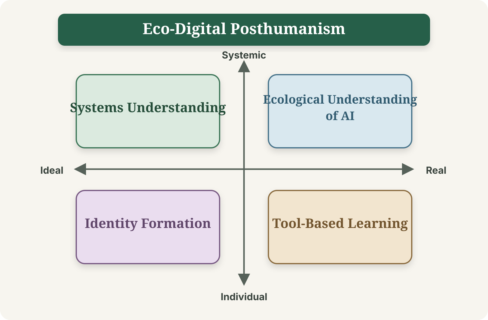

EcoAI Framework: A Sociopedagogical Model for the Anthropocene
The EcoAI Framework proposes an interdisciplinary approach to integrate Ecoliteracy and Artificial Intelligence (AI) into civic education in secondary schools, shaping a new generation of eco-technological citizens.
What the research delivered
A map of how 403 upper-secondary students relate to sustainability and AI, with three recurring profiles.
A four-domain competence model, with rubrics for lesson design and classroom observation, integrating environmental, media and algorithmic literacy.
The EcoAI Index: five scales and 25 indicators, built and validated in two phases, designed to monitor civic education and SDG Target 4.7.
What the data show
AI and the environment: a demand emerges for AI governed by ethical, fairness and sustainability principles, tied to environmental values more than to distrust of technology.
Ecoliteracy: agreement with general environmental values is widespread even where agency and skills remain low; almost a third of the exploratory sample (30.5%) is distant from sustainability issues.
Digital media and citizenship: only a quarter of students (25.1%) read AI critically, yet critical AI awareness is the strongest link to eco-digital agency in the structural model (β = 0.732).
Theoretical framework
Ecodigital Posthumanism: the original theory behind the framework, reading agency and responsibility as distributed and asymmetrical capacities across people, digital infrastructures and environments (Rubino, 2025, SocArXiv preprint).
Ecomedia literacy: media read as environments with a material cost (energy, extraction, infrastructure), the perspective developed in the systematic and bibliometric review published in Visions for Sustainability (2026).
Civic education and the 2030 Agenda: Law 92/2019 and its guidelines as the regulatory frame, with Target 4.7 as the horizon in which the EcoAI Index works as a monitoring tool.
Scientific Foundations of the Framework
EcoAI is grounded in Eco-Digital Posthumanism and in research on ecoliteracy, digital media and artificial intelligence. The four domains are analytically distinct but interdependent: none is a prerequisite or terminal stage. The current taxonomy is presented below; EcoAI Literacies are cross-cutting resources and are not additional domains.
The Four Quadrants of the EcoAI Framework
The framework comprises four analytically distinct but interdependent domains. Their different numbers of subdomains are intentional and do not imply a hierarchy. Select each domain to explore it.

Explore the framework competences, consult the EcoAI rubrics, read about the empirical validation of the EcoAI Index or browse the complete questions and answers.
The rubrics serve a pedagogical and formative assessment function; they are not psychometric scales and are not equivalent to the EcoAI Index. Their levels describe qualitative differences in interpreting problems, representing relations, using tools and justifying choices.
Example: Systems Literacy and Mapping.
- Fragmented literacy: recognises ecological or digital elements but does not integrate them.
- Interconnected understanding: describes some relations among energy, matter, information, technology and environment.
- Mature systems literacy: maps components, processes, flows, criticalities and delays with appropriate tools.
- Advanced eco-digital literacy: integrates data infrastructures, energy, algorithmic governance, digital materiality and planetary limits.
Competence Development
EcoAI has adopted several key GreenComp competences (systems thinking, critical thinking, agency for sustainability) and extends them to artificial intelligence and digital infrastructures. The four levels organise a pedagogical progression proposed by the Framework. Select a competence to view its descriptors.
Positioning in relation to international frameworks
EcoAI brings together sustainability, digital infrastructures, artificial intelligence, information practices, agency and subject positioning. GreenComp, DigComp and educational AI-literacy frameworks are comparative references with different functions: the correspondence is conceptual and pedagogical, not direct derivation or evidence of validation.
GreenComp: European framework of competences for sustainability
GreenComp organises sustainability competence into four interconnected areas: Embodying sustainability values, Embracing complexity in sustainability, Envisioning sustainable futures and Acting for sustainability. EcoAI shares its attention to values, complexity, futures and action, while taking the relations among ecological systems, digital infrastructures and AI as its specific object.
AI literacy, DigComp, UNESCO and OECD
DigComp provides a reference for digital competence; UNESCO and OECD–European Commission frameworks directly address AI-related competences; AI-literacy research helps distinguish understanding, use, critical evaluation and responsibility. EcoAI uses them for functional positioning without presenting them as direct sources of its taxonomy or as validation of its rubrics and EcoAI Index.
EcoAI's specificity lies in how these problems are configured together, not in a claim to replace or surpass existing frameworks.
Relationship between EcoAI Domains and GreenComp Areas
Qualitative map based on five representative GreenComp competences. The ordinal scale distinguishes secondary, relevant and central conceptual relevance; it is not an empirical score or an equivalence between frameworks.
The 4 domains Select a domain to highlight it
The GreenComp relationship chart could not be loaded.
Alignment with the Sustainable Development Goals (SDGs)
The EcoAI Framework directly contributes to numerous United Nations Sustainable Development Goals, promoting education for a fair and sustainable future. The SDGs provide pedagogical references for connecting EcoAI domains to concrete problems. Activities may, for example, examine electricity consumption, the composition of energy sources, carbon footprint, water use and the unequal distribution of AI’s ecological costs; or support global-citizenship and collective-action practices addressing transnational environmental problems.

SDG 4: Quality Education (target 4.7)
The framework proposes ecological literacy and critical AI literacy competences for secondary education, in dialogue with GreenComp, and the EcoAI Index as a group-level monitoring tool. Domains: Systems Understanding, Tool-Based Learning and Identity Formation.

SDG 13: Climate Action
Ecological Understanding of AI brings the energy use and infrastructure of AI systems into teaching, while Systems Understanding develops the reading of feedback loops. The AATI scale records declared awareness of the environmental risks of AI.

SDG 10: Reduced Inequalities
Identity Formation addresses bias, fairness and representation in algorithmic systems, taking environmental and climate justice as a criterion of analysis.

SDG 16: Peace, Justice and Strong Institutions
The framework treats algorithmic accountability and civic participation as educational objectives, operationalised in part by the VAL and AGY scales.
Other SDG connections